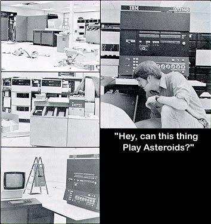

On December 6, 1978 another milestone was reached at Atari.
The IBM 370-148 computer system was installed at the company headquarters.
Over the next year, jobs being processed on the outside will be converted
onto our new system. This will enhance the turnaround time
for all applications, and will provide more timely reports and meaningful
decision-making information. The IBM 370 computer is a system
in the mid-range of IBM equipment capable of processing numerous applications
simultaneously and still providing online teleprocessing for updating and
retrievals of numerous data files and new program development.